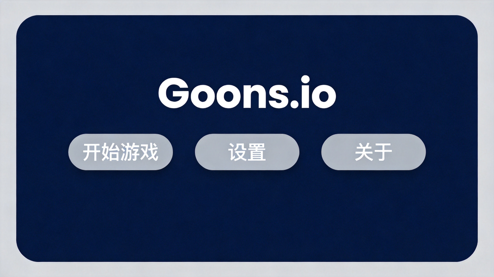
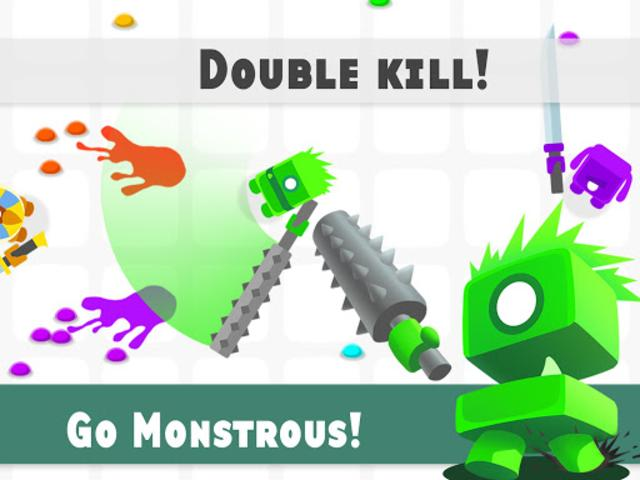
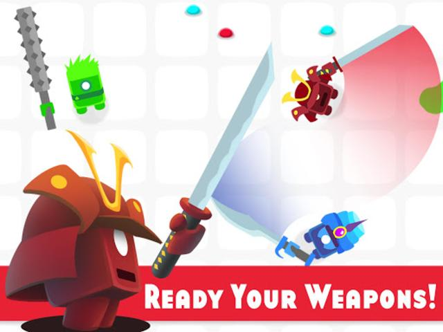
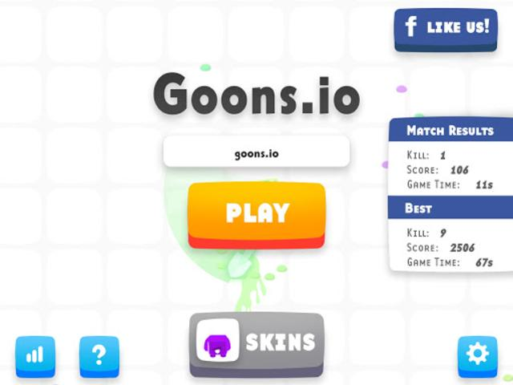
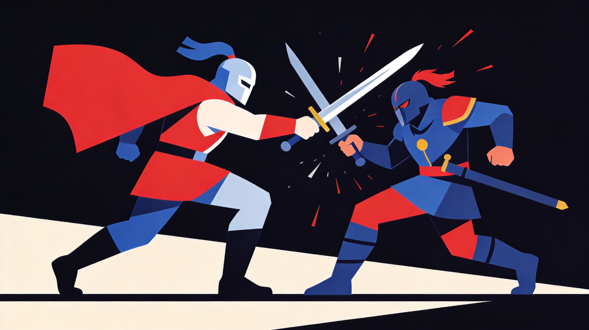

Goons.io takes medieval combat into the .io arena. You swing swords, block attacks, dodge strikes, and try to be the last one standing. It's simple to understand but surprisingly deep—the timing, positioning, and read on your opponent matter more than raw button mashing. I got destroyed my first few matches before it clicked.
🎯 Game Basics

Medieval Arena
Goons.io drops players into arena-style medieval battlegrounds. No progression, no upgrades—just pure sword fighting skill. Win fights, survive as long as possible, and climb the leaderboard.
One-Hit Philosophy
Most weapons deal significant damage—often enough to end fights quickly. Getting hit matters a lot. Defense and positioning are as important as aggression.
Weapon Variety
Different weapons have different properties. Swords offer balanced speed and damage. Axes hit harder but swing slower. Hammers provide knockback. Know your weapon's strengths.
⚔️ Combat Mechanics

Attacking
Click or tap to swing your weapon. Each weapon has an attack arc and cooldown period. Timing matters—swing too early and you miss, too late and you're punished.
Blocking
Hold block to reduce incoming damage and potentially parry attacks. Well-timed blocks can turn fights around. But blocking prevents you from attacking, so choose wisely.
Dodging
Movement abilities let you dodge attacks. Quick sidesteps can avoid swings entirely. Effective dodging requires reading opponent animations and reacting fast.
Once you swing, you're committed until the animation finishes. Attacking recklessly leaves you vulnerable. Patience wins fights.
Understanding Hitboxes
Each weapon has a specific hitbox and swing arc. Knowing exactly where your attacks connect helps land hits and avoid whiffing. Practice swing timing until muscle memory develops.
Recovery Frames
After attacking, weapons have recovery periods where you can't act. This vulnerability window is when skilled players counterattack. Learning recovery durations for common weapons gives you counter opportunities.
🎯 Combat Strategies

1. Read Your Opponent
Watch for attack patterns. Some players swing predictably—exploit these habits. Others bait attacks before counterattacking. Adjust your approach based on who you're fighting.
2. Control Engagement Distance
Each weapon has optimal range. Swords excel at mid-range. Axes need closer positioning. Keep distance based on your weapon's strengths and your opponent's weaknesses.
3. Feint and bait
Fake attacks to bait defensive reactions, then punish the block or dodge. Psychological warfare is real in Goons.io. Make opponents think you're aggressive, then strike when they hesitate.
4. Use the Arena
Obstacles provide cover and tactical advantages. Corner opponents against walls, use pillars to break pursuit, and position yourself favorably before committing to fights.
5. Punishing Mistakes
Aggressive players overextend. Wait for opponents to commit to attacks, then counter during their recovery frames. Patience converts enemy mistakes into free hits.
6. Terrain Advantage
Narrow corridors favor defensive players. Wide spaces allow circling. Position yourself in areas that match your preferred playstyle and force opponents into unfavorable terrain.
7. Managing Multiple Opponents
Facing several enemies? Prioritize the weakest threat. Don't spread your attention thin. Take out one opponent cleanly, then deal with the rest. Multiple half-dead enemies are harder than one clean kill plus weakened survivors.
8. Weapon Switching
Switch weapons based on matchups. Swords beat axes if you can stay aggressive. Hammers counter swordspam with knockback. Counter your opponent's weapon choice for advantages.

💎 Pro Tips
Don't spam attacks. Every swing has recovery time. Players who spam are easy to punish. Attack with purpose, not panic.
Watch for player spawns. Newly spawned players are fresh targets. Be aware of respawn timing and position yourself accordingly.
Pick weapons that match your style. Aggressive players prefer fast swords. Defensive players might like hammers for counterattacking. Find what works for you.
Stay mobile between fights. Stationary players are easy targets. Keep moving to make yourself a harder mark while searching for opponents.

❓ Frequently Asked Questions
What's the best weapon in Goons.io?
No single best weapon exists. Swords are balanced and popular. Axes deal more damage but swing slower. Hammers offer crowd control. Choose based on your preferred playstyle.
How do I block effectively?
Hold the block button before attacks land. Timing is crucial—block too early and you waste the duration, too late and you take damage anyway. Practice makes perfect.
Should I play aggressively or defensively?
Both work, but reactive aggression tends to succeed. Let opponents commit to attacks, then punish with your own swings. Pure aggression often leads to overextension.
What happens when I die?
You respawn immediately at a random location with full health. Your previous position and any kills you had don't carry over.
Can I play with friends?
Team modes allow coordinated play with friends. Working together significantly changes combat dynamics—you can pin opponents or protect each other.
Why do I keep dying to the same player?
Consistent deaths to one opponent often mean they're reading your patterns. Vary your approach—change weapons, timing, or strategy to break their reads.
📝 Related Games to Try
Enjoy medieval combat? Check out Bonk.io for physics-based battles, BrutalMania.io for weapon variety, or CrazySteve.io for block-building combat.
📝 Conclusion
Goons.io rewards patience, pattern recognition, and well-timed aggression. Master your weapon's timing, read opponents effectively, and capitalize on mistakes. Victory goes to fighters who think, not just react.
Draw your sword and enter the arena! May your blade strike true.
Last updated: January 20, 2024
Written by the iogameguide.com team